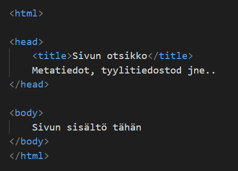

Perustietoa HTML kielestä
Tässä on HTML-dokumentin perusrunko jonka sisälle verkkosivujen sisältö sijoitetaan.
Muutamia HTML-tägeja
Painamalla "HTML-tageja" painiketta taulukko eri tageistä avautuu.
<html>
- HTML-koodin peruselementti. Kaikki muut HTML-elementit täytyy sisällyttää tämän elementin sisään
<head>
- Sisältää sivun metatiedot ja muut tiedot, jotka eivät näy suoraan sivun sisällössä kuten tyylitiedostojen sijainnit ja sivun otsikon.
<body>
- Sisältää kaiken sivun näkyvän sisällön, kuten tekstin, kuvat, linkit.
<p>
- Käytetään tekstikappaleiden määrittämiseen. Kaikki sen sisäänkirjoitettu teksti tulkitaan yhdeksi tekstikappaleeksi.
<img>
- Kertoo kuvan sijainnin verkkosivuston sisällön joukossa. Tähän lisäämällä <img src "linkki"> voidaan kertoa sijainti mistä kuva ladataan sivulle.
<a>
- Luo hyperlinkin verkkosivulle, tiedostoihin tai esimerkiksi saman sivun sijainteihin. Tähän lisäämällä <a href "sijainti"> voidaan määrittää mihin linkki vie.
<br>
- Käytetään rivinvaihdokseen tekstissä.
<h1>
- Luo sivulle otsikon ja sen kokoa voidaan muuttaa muuttamalla h-kirjaimen jälkeistä numeroa esim : <h1-6>.